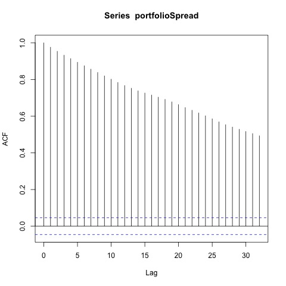
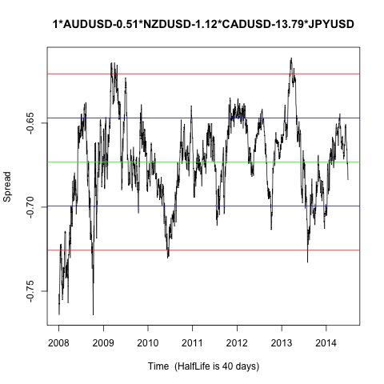
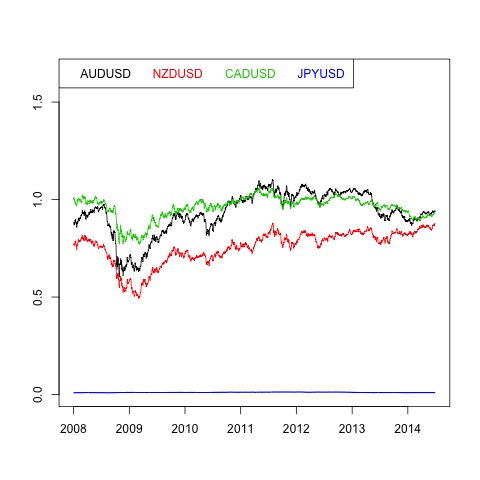
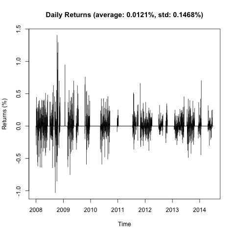
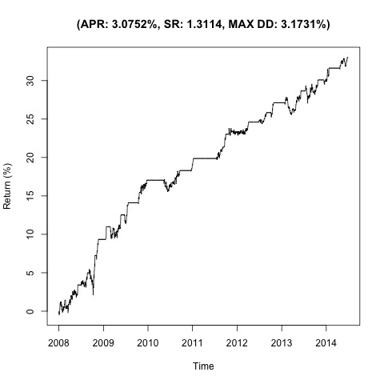

Johansen-Procedure 1.03 7.52 9.24 12.97 5.07 17.85 19.96 24.6 23.18 32 34.91 41.07 51.64 49.65 53.12 60.16 1 1 1 1 1 -0.52 -0.81 -3.86 -2.58 -5.75 -1.1 0.55 1.34 2.12 7.68 -13.66 -77.74 -131.35 59.35 84.05 0.67 0.03 2.15 -1.57 -5.56
Augmented Dickey-Fuller Test p-value 0.01    